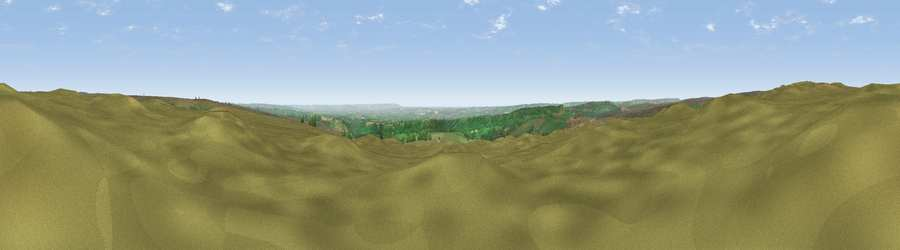

Viewpoint near Gillamoor
#7621 in England · top 22% of its area beats it · near Gillamoor · open accessWhere it is
The exact computed spot (SE 65812 94338). Click the marker for map links.
Public access: this spot lies on mapped open-access land (CRoW Act 2000) — you may roam here on foot. Computed from Natural England's CRoW access layer and OpenStreetMap rights of way — not the legal definitive map. Always verify locally.
The view, rendered

A 360° render of this exact spot computed from the terrain model, tree cover and land cover — summer colours, afternoon light, calibrated against photographs of famous viewpoints. Real trees, hedges and buildings will differ in detail.
The panorama
Grey silhouette: terrain skyline in each direction (720 bearings, Earth curvature and refraction included). Dashed green: skyline with trees (+15 m) and buildings (+8 m) as obstacles. Blue strip: how far the ground is visible on each bearing.
Where the view opens
Wedge length = distance to the farthest visible ground on that bearing (vegetation-aware). Rings at 10, 25 and 50 km.
What fills the view
66% grassland · 19% woodland · 15% cropland
Angular shares of the visible panorama (visual magnitude), not map area. Landscape diversity 0.39 (0–1 Shannon).
Key numbers
More beautiful places nearby
The staircase of upgrades: each row has a higher view potential than everything closer. Driving times are estimates from straight-line distance, calibrated against real road routing — check an actual route before setting out.
| Place | Direction | Drive | Score |
|---|---|---|---|
| Viewpoint c9909_9299 | NW · 1 km | ~4 min | 67.8 |
| Viewpoint near Gillamoor | S · 3 km | ~8 min | 72.8 |
| Viewpoint near Ingleby Greenhow | NNW · 10 km | ~20 min | 75.6 |
| Viewpoint near Ingleby Greenhow | NNW · 12 km | ~22 min | 76.0 |
| White Hill | NW · 13 km | ~24 min | 84.2 |
| Viewpoint near Great Broughton | NW · 13 km | ~24 min | 84.4 |
| Viewpoint near Kirkby | NW · 15 km | ~27 min | 84.9 |
| Carlton Bank | WNW · 16 km | ~28 min | 85.1 |
54.34036, -0.98923 · source: screening · position refined by local search. Computed location — check access rights before visiting.